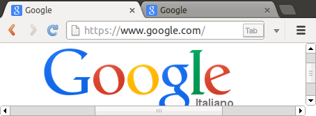
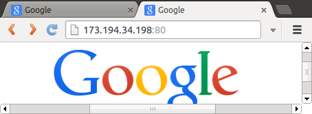
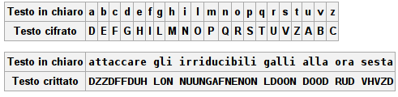
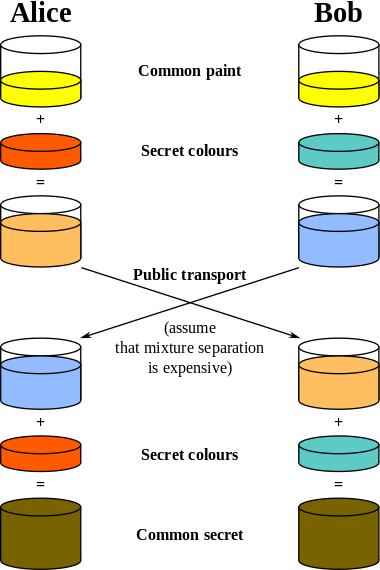

Sicurezza, questa sconosciuta
Di cosa non ci interesseremo:
- Firewall
- Antivirus
La sicurezza è un campo vastissimo, con diversi criteri/requisiti:
- Confidentiality
- Integrity
- Availability
- Authenticity
- Non-repudiation VS Plausible Deniability
- etc...
Citazione "Obbligatoria"
“Security is a process, not a product. Products provide some protection, but the only way to effectively do business in an insecure world is to put processes in place that recognize the inherent insecurity in the products. The trick is to reduce your risk of exposure regardless of the products or patches.”Bruce Schneier
Piena di...
...personaggi...
...singolari...

Profitto?
- Bitcoin Mining
- Conti correnti e carte di credito
Bitcoin
aprile 2012 -> ~2000$ al mese
difficulty = 1,508,590
cambio BTC/$ = 5.08
ora (ottobre 2013) -> ~200$ al mese
difficulty = 267,731,249
cambio BTC/$ = 178.80
http://www.bitcoinx.com/profit/ https://en.bitcoin.it/wiki/difficulty
Carte di credito
I do not cash out the bank accounts or credit cards, I just sell the information [...], there isn't even a law against such in most countries, dealing with stolen information is most of the time a legaly greyzone
dettagli interessanti:
I malintenzionati non sono più intelligenti/competenti di voi, spesso sono semplici script kiddie> most botnet operators never coded or scripted a single line in their life
That's kind of the scary part. Illegal activity is being commoditized.
With basic perl skills your malware gets randomly recompiled very often and circumvents all the AVs. If you acquire basic asm knowledge you get a bootkit.
- If the attachment is ending in .exe and pretending to be something else, it's malware for sure. If it's a .pdf it can only infect you if you haven't patched your Adobe Reader (Is now done automaticly). Cybercriminals use 0day exploits only on valueable targets like Iranian power plants or companies with intellectual properties and fucking lot of cash.
- Facebook friends don't share funny cat pictures on randomly generated domain names.
- If your AV says it's clean or even if Virustotal gives you 0/43 it can still be malware, been there, seen that. Srsly, don't trust your AV.
- Windows updates, yes, do them. If you have a pirated copy, just buy that shit or use linux .
- If you are super paranoid, buy a netbook and use a LiveCD or similiar on it whenever you put your CC information in.
Antiviri don't work, firewalls never helped, fraud detection system are blind when abusing the victim computer as a proxy. The only cure is strong cryptography and simple yet unbreakable solutions, even if it's unconvinient. Some European countries for example already use private/public key authentification for banking and only allow credit cards with chips. Magnetic stripes are the most hilarious thing ever
[I get] about 500-1000 [new infected machines] a day, weekends more. I'm thinking about just buying them in bulks and milking them for bitcoins. Asian installs are very cheap, 15$/1000 installs and have good GPUs.
Stealing bitcoin wallets is now really hard. To get the password of the wallet.dat you need to inject into the bitcoinqt.exe process and grab the password from the memory in a timeframe of 1-2 seconds after he entered it. Or just keylog and search tru thousands of keystrikes.
Internet Protocol Crash Course


Firewall:
- Packet filter
- Stateful Packet filter
- Application layer filtering/ Deep packet inspection
Password Hygiene
Expiring passwords are the dumbest thing ever, as if password informations constantly leak outside and after 3 months every knows you password. Bruteforcing is dumb and most of the time successless. Grabbing it from the source is the way to go. All the password security policies are doing it wrong, making it hard to remember and easy to guess you added a "1!" at the end of your pet's name. Related: http://xkcd.com/936/
Attenzione: il Bruteforcing offline non è da sottovalutare
[1] [2]- OpenID
- Mozilla Persona
- Client-side certificates (ne parleremo dopo)
Contromisura: mai riutilizzare le password
"Ma è di una scomodità allucinante!"
Keepass/Keepassx
Lastpass
Keyring dell'OS, Google Chrome, Master Password di Firefox...
Ora passiamo ai "benintenzionati"

shortly after the Sept. 11 terrorist attacks America's three largest telecoms [AT&T, Verizon, BellSouth] signed contracts to provide the NSA with detailed call records from hundreds of millions of people across the country.
Qwest's refusal to participate "left the NSA with a hole in its database" since the company served local phone service to 14 million customers in 14 states.
Nacchio alleged that the government stopped offering the company lucrative contracts [worth hundreds of millions of dollars] after Qwest refused to cooperate with a National Security Agency surveillance program in February 2001.
Qwest stock began a sharp decline in May 2001 [...] In 2002, Qwest admitted to false accounting [...] Nacchio was sentenced to six years in federal prison for insider trading
NSA had violated privacy rules on nearly 3,000 occasions in a one-year period [...] The LOVEINT violations involved overseas communications, officials said, such as spying on a partner or spouse. In each instance, the employee was punished either with an administrative action or termination.
Abbiamo già diversi casi di abuso di potere, completa opacità e totale mancanza di responsabilizzazione.
Purtroppo, non è una cosa così inaspettata:
-
Agenzia per la sicurezza nazionale
-
Dipartimento per la sicurezza della patria
-
Stasi, State Security
Sicurezza dello Stato
-
KGB, Committee for State Security
Comitato per la Sicurezza dello Stato
e per quanto riguarda l'italia?
Noi abbiamo la "fortuna" di avere governanti che confondono fibre ottiche con dei tunnel
Solo per l'intelligence americana nel 2013, vengono investiti 52.6 miliardi di dollari
Di questi, 11 miliardi sono solo per sovvertire, "rompere" la moderna crittografia
Data Center in Utah, capacità stimata fra i 3 e i 12 Exabyte (1EB = 1,000,000,000 GB)
In alcuni casi, si difendono queste pratiche dicendo che si tratta solo di raccolta di "metadati", non è spionaggio...
Il problema è che con i metadati ottengono sorveglianza, conoscono tutti quelli coi quali comunicate, e viceversa per le persone che conoscete
Questo è il primo mattone per poter esaminare, censire, proibire e perseguire tutto ciò che finora è stata libera associazione
Crittografia
Ne abbiamo accennato, ma di cosa si tratta?Cifrario di Cesare


Crittografia asimmetrica
Utile quando non si ha un canale sicuro sul quale scambiare la chiave per una crittazione simmetrica
Scambio di chiavi
TLS
Il primo step di fornire la chiave pubblica, è gestito tramite certificati x.509
Su questo sono basati https e le versioni sicure di altri protocolli, come smtp, imap, xmpp...
Tutto risolto?
- Centinaia di Certification Authority fidate, ognuna può autenticare ogni altro dominio, e la loro lista può venire aggiornata transparentemente
- delle CA hanno firmato certificati per indirizzi come 192.168.1.2
- 6000 certificati sono stati firmati per localhost
- Alcuni paesi hanno CA ma non le usano... dopo quanto tempo ce ne si accorgerebbe se venissero compromesse?
- Nel 2010, 500 certificati vulnerabili (debian openssl bug) erano ancora validi
- Booz Allen Hamilton è fra le subordinate CA
- Un anno dopo la scoperta della compromissione di Diginotar, i loro certificati erano ancora accettati [1] [2]
The PKI industry has been a sham since day one
In pratica, abbiamo delegato la gestione di una Web Of Trust (Hierarchy of Trust)
Cosa possiamo fare?
DIY!
- Certificate pinning ( implementato in Chrome dalla versione 13 ) [Owasp guide] (Il controllo torna a chi pubblica il certificato, ma rende più difficoltoso aggiornarli)
- Self Signing?
- CACert's assurance policy
- TACK
- Convergence
Altri problemi
- nel web si possono mischiare pagine servite su HTTP che linkano pagine HTTPS, recipe for disaster (vedi sslstrip )
- I browser delegano la scelta dell'accettare una connessione non sicura agli utenti
- Le chiavi generate possono essere deboli! E di ciò i browser non vi possono avvertire (La chiavi deboli potrebbero essere un problema anche per altri sistemi, come GPG )
- Lo stato attuale dei più diffusi siti internet
Un'altra soluzione
Client Side Certificates: L'idea è che anche voi forniate un certificato al server al quale vi connettete, che firmerà la vostra chiave pubblica (come una CA) per le successive connessioni, rendendo quindi impossibili diversi attacchi Mitm
Non solo l'utente in questo modo non si deve ricordare una password, ma non essendoci quest'ultima, non viene neanche trasmessa... né in chiaro né crittata
Per la creazione di un certificato client side, esiste apposta l'elemento keygen in HTML5
Client Certificate FAQSkype
I will not tell you whether we can listen or notSkype's Chief Security Officer
Skype ha sempre fornito una versione separata del client per gli utenti cinesi
Da febbraio 2012, Skype ha abbandonato la sua architettura P2P
IMessage
In teoria, tutto crittato fra mittente e destinatario, Apple non può accedervi
In pratica: con iCloud Apple può accedere liberamente ai vostri dati
E se anche disattivate il backup iCloud, Apple conosce la vostra password, ed ha accesso indiscriminato ai certificati
Una sequela di problemi, di cui l'ultimo è usare la stessa chiave RC4 per i messaggi in entrata ed in uscita
From: paolo_grasselli@example.com To: bglug@example.com Subject: Paolo Grasselli is out of the office. I will be out of the office starting 19/03/2008 and will not return until 21/03/2008. I will respond to your message when I return. =
GPG
From: noyse <lappeso@example.com> To: Dario Bertini <berdario@example.com> Subject: Re: Python & Hacklab -----BEGIN PGP MESSAGE----- Charset: UTF-8 Version: GnuPG v1.4.11 (GNU/Linux) Comment: Using GnuPG with Thunderbird - http://www.enigmail.net/ hQIMAxIGK+NFZpG5AQ/9Ensz+xK2yi76wDjeqB/2FW8qfHA+Dm0LRCbhju72tmQO +2CjfZ5aeCiOke3shRUYwX1+8oTN/USOKe/8m67YY4bSVGhDc3u7Dr1PV0VBx/RR xoOPe0uaqjBhw8+rE0ciu7IXpG8ZGy06PfqNW44gAhY4Sqsy9gXsL9w0XlkJyEcD UUQBW4VofaAJHODa7gIMWk/WKcoWezxK3smY4SHzoD8S6OSFtHuB9XrJgblMTZcw ROd2LBYNm8Eo820R7WRzDRXk6o2RiD0RZx71O1ahjbxdj00myU8qOXSaxeeZvuPJ qBfgUOgZ6XIifzS6T7YCwjb28C4LJsKJgZrXudtfh/j2VmOtaXB6CkVitZwtGuKH 8dn+iZopbs7Z7c3wpPyTQ9Mn0U+AvlR/8Vw1RUWcCFTJCXO58s2SXS900s4Krvdu Fqkyk0s8EbsEUqL28hKj1eweJYEYFiycxrXZbHvuKQ//rSsK6HBcs7/tB/BCYiJZ gNZzeevPfb603ocKBypAR5CaapE5NMgu/QqZ1XK9gMkY0Ee97wuvtdLPvH1Gbp6r 1/Y2fu2PeLltdppUfZwO8SI2VGu/EqabqC/U8cysI3PkMUPCh+36fHK4zBOD7Sl8 maJWTJhcNkHf3eODrX3o0BZyJsB/zDj2hfJVr834hHE4p3WiKMMCGi3KZ2R3Q2HS k8Qn3w4amUCK6GalXQHKW2gdxainGdiN5HDgQSkYmnYLhLYNGjG5zmMm7ytNDC2Q kW+D+KSn3RcNcnY6SV2RN11JjI09UeJVoN3fKwPsdNXOM7WPGTm2XcWmXtfE1bLy WG+2+l9QSD/UFTA+tPOdxh9bmTQz+EjPiZj7HJCIUtQJFOyFKdVs1zTTr+3cyVEv +aXad7OmQvN40IrjqJDSRLMhKLDtyxJAb3CN0kAGu3Zo0QvnofI1lJGJszKEe6DF kB6V7ufUYdb/W6eIWsq6R14FARsG97F6jwQ2J4UaFFvQrx3EnndW77JZr7e3CI4T IX7JoK1ImxC+Note1wttR7eR4UfimhENKBuwYoNOMDimESRa0Vczx0rOiZiBqk5b vHPc =b+ew -----END PGP MESSAGE-----
XMPP
È possibile usare GPG, e TLS è di uso comune per la connessione ai server (anche se diversi server sono malconfigurati )
È specificato anche il supporto per i client side certificates (ed implementati in server come Prosody )
L' Off The Record messaging è la soluzione principe per riservatezza ed autenticazione, ma fornisce anche "forward secrecy" e negabilità dell'autenticazione
TorChat